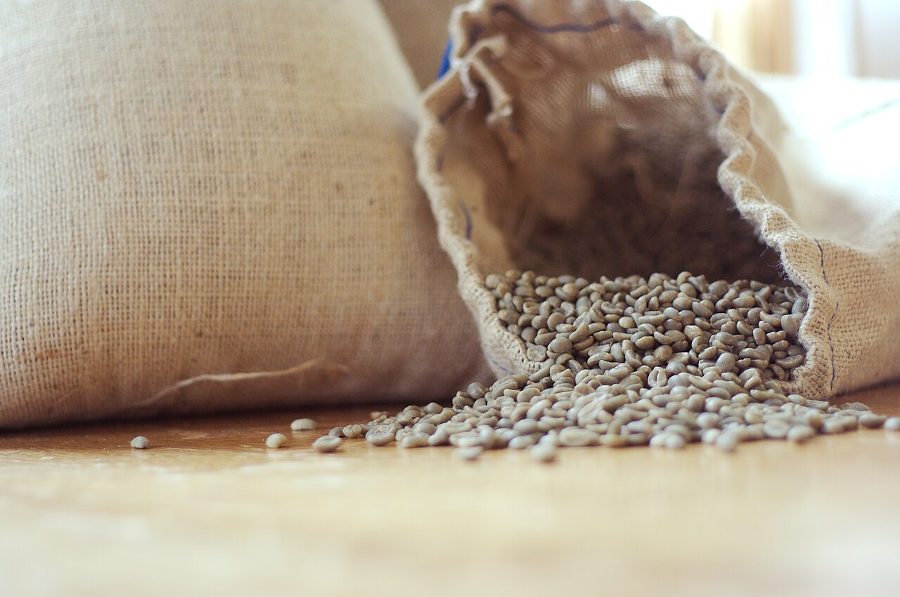
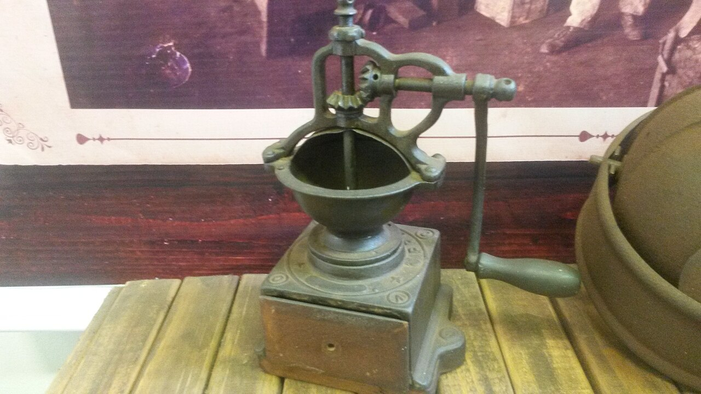

生豆から、一杯まで。
珈琲の一杯は、生豆の状態から始まり、焙煎、挽く、淹れるという流れを経て届きます。このページでは、その流れを一本の線に見立てて、ご紹介の構成を考えました。
「生豆から一杯まで、ひとつの線でつなぐ」は、珈琲焙煎工房という屋号をもとにした、サンプル制作側のコンセプト案です。
※制作側の案です。店舗の公式なコンセプトではありません。
珈琲ができるまでの流れ(一般的な説明)
※以下は一般的な珈琲の工程を、このような構成にしてはどうかとご提案するものです。店舗での実際の作り方・こだわりを示すものではありません。
-
選ぶ(生豆)
珈琲豆は、焙煎する前は淡い黄みがかった「生豆」の状態です。ここが一杯のはじまりです。

-
焙煎する
生豆に熱を加えて焙煎すると、色が少しずつ深くなり、香りが立ちはじめます。

-
挽く
焙煎した豆は、淹れる方法に合わせて挽きます。挽いた瞬間に香りが広がります。

-
淹れる
挽いた粉にお湯を注いで、一杯に仕上げます。抽出の方法はさまざまです。

掲載写真はフリー素材によるイメージです。店舗の実際の様子・商品ではありません。他地域で撮影されたもの、撮影地が不明なものを含みます。
ご利用案内
営業日・営業時間は、お電話でご確認ください。
- 営業時間
- 準備中(お問い合わせください)
- 定休日
- 準備中(お問い合わせください)